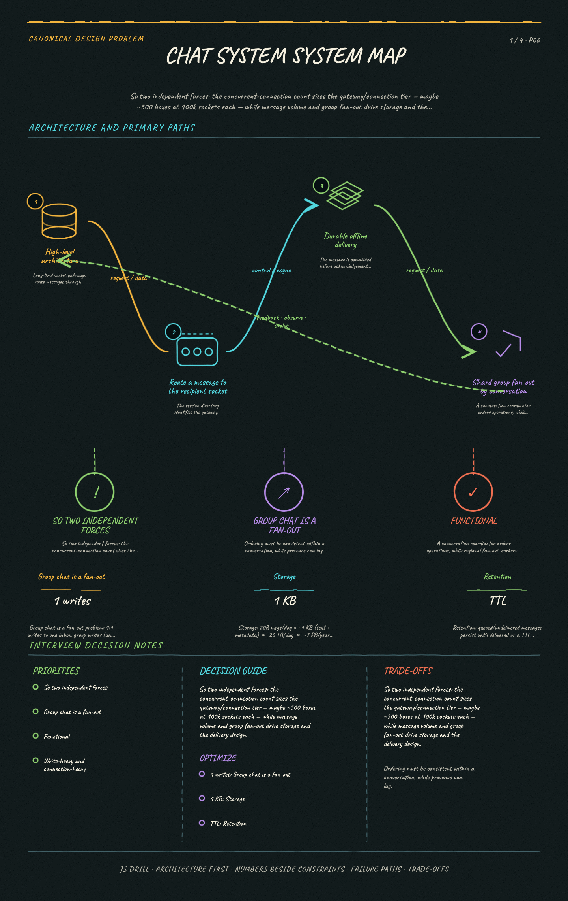

https://frosty110.github.io/js-drill/assets/system-design/infographics/design-problems/p06/overview.pngSo two independent forces: the concurrent-connection count sizes the gateway/connection tier — maybe ~500 boxes at 100k sockets each — while message volume and group fan-out drive storage and the delivery design.
A WhatsApp/Messenger-style messaging service delivering messages in real time over persistent WebSocket connections. The signature challenges are mapping each user to the server holding their live connection, ordering and durably storing messages, delivering to offline users via store-and-forward + push, and fanning out group messages.
All questions, model answers and diagrams for Design a Chat System →